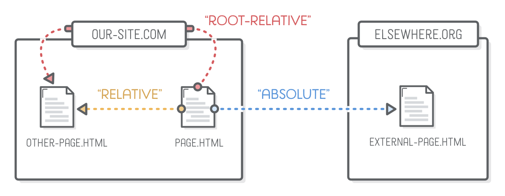
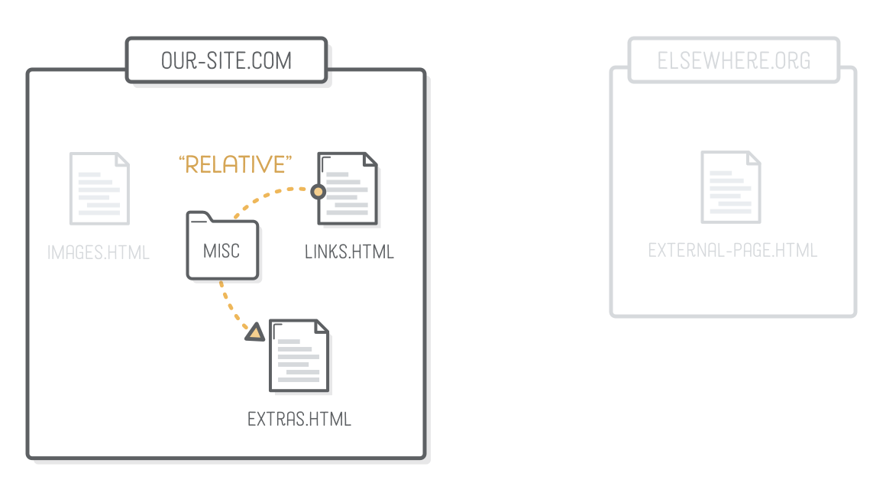
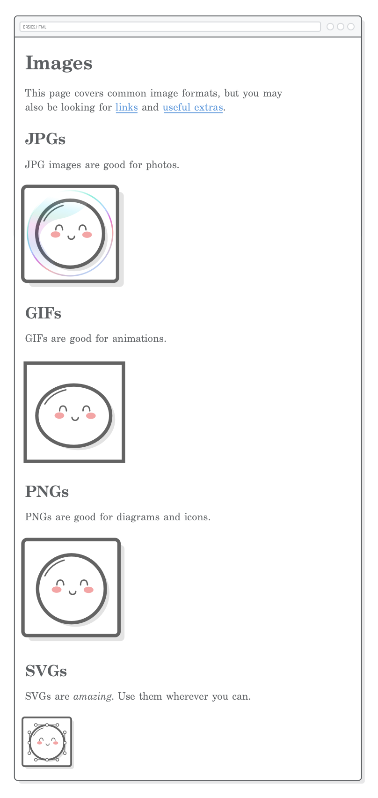

A friendly HTML tutorial about connecting web pages to each other
The previous chapter covered
some very important HTML elements, but we were only dealing with a single web
page. Links and images are fundamentally different from those elements in that
they deal with external resources. Links point the user to a different
HTML document, and images pull another resource into the page.
To use links and images, we’ll also need to learn about another
component of the HTML syntax: attributes. Attributes will open up a whole new
world of possibilities for our web pages.
In this chapter, we’ll create a simple website composed of several
HTML documents and image files. It may be entitled Links and Images,
but the central theme of this chapter is actually around file and folder
organization. As we start working with multiple files, we’ll discover the
importance of being an organized web developer.
SETUP
This chapter is all about linking web pages together, so we’ll need to
create some new HTML files before we code anything up. We’ll be working
with three separate web pages this chapter, along with a few image files of
various formats:
To get started, create a new folder called links-and-images to
store all our files. You should be able to do this in Atom using the same
process we followed in the Introduction
chapter.
Links Page
Next, add a new file to that folder called links.html and
insert the following HTML template. This should be familiar to you from the
previous chapter.
Note that you can create a new folder in Atom by right-clicking the file
browser pane and selecting New Folder in the contextual menu.
Life is better when you never need to leave your text editor.
Image Downloads
We’ll be embedding images in our images.html file, so be
sure to download these example mochi
images, too.
Unzip them in your links-and-images folder, keeping the parent
images folder from the ZIP file. Your project should now look like
this:
ANCHORS
Links are created with the <a> element, which stands for
“anchor”. It works just like all the elements in the previous
chapter: when you wrap some text in <a> tags, it alters the
meaning of that content. Let’s take a look by adding the following
paragraph to the <body> element of
links.html:
<p>This example is about links and <a>images</a>.</p>
If you load the page in a web browser, you’ll notice that the
<a> element doesn’t look like a link at all. Yes,
unfortunately, the <a> element on its own doesn’t do much of
anything.
LINKS
In the same way that an element adds meaning to the
content it contains, an
HTML “attribute” adds meaning to the element it’s attached
to.
Different elements allow different attributes, and you
can refer to MDN for
details about which elements accept which attributes. Right now, we’re
concerned with the href attribute because it determines where the
user goes when they click an <a> element. Update your link
to match the following:
<p>This example is about links and <ahref='images.html'>images</a>.</p>
Notice how attributes live inside the opening tag. The attribute
name comes first, then an equal sign, then the “value” of the
attribute in either single or double quotation marks. This syntax distinguishes
attributes from content (which goes between the tags).
The extra bit of information provided by the
href attribute tells the browser that this <a>
element is in fact a link, and it should render the content in its default blue
text:
ABSOLUTE, RELATIVE, AND ROOT-
RELATIVE LINKS
Now that we’re working with links, we need to understand
how a website is
structured. For our purposes, a website is just a collection of HTML files
organized into folders. To refer to those files from inside of another file,
the Internet uses “uniform resource locators” (URLs). Depending on what you’re
referring to, URLs can take different forms. The three types of URLs we’ll be
dealing with are highlighted below:
Absolute, relative, and root-relative links refer to the value of the
href attribute. The next few sections will explain how and when to
use each of them. But first, let’s add the following content to our
links.html file:
<p>This particular page is about links! There are three kinds of links:</p><ul><!-- Add <li> elements here --></ul>
Absolute Links
“Absolute” links are the most detailed way you can refer
to a web resource.
They start with the “scheme” (typically http:// or
https://), followed by the domain name of the website, then the
path of the target web page.
For example, try creating a link to the Mozilla Developer
Network’s
HTML element reference:
<li>Absolute links, like to
<ahref='https://developer.mozilla.org/en-US/docs/Web/HTML'>Mozilla
Developer Network</a>, which is a very good resource for web
developers.</li>
It’s possible to use absolute links to refer to pages in your own
website, but hard-coding your domain name everywhere can make for some tricky
situations. It’s usually a better idea to reserve absolute links only for
directing users to a different website.

Relative Links
“Relative” links point to another file in
your website from the vantage point of the file you’re editing. It’s implied
that the scheme and domain name are the same as the current page, so the only
thing you need to supply is the path.
Here’s how we can link to our extras.html file from inside of
links.html:
<li>Relative links, like to our <ahref='misc/extras.html'>extras
page</a>.</li>
In this case, the href attribute represents the file path to
extras.html from the links.html file. Since
extras.html isn’t in the same folder as links.html,
we need to include the misc folder in the URL.

Each folder and file in a path is separated by a forward slash
(/). So, if we were trying to get to a file that was two
folders deep, we’d need a URL like this:
misc/other-folder/extras.html
Parent Folders
That works for referring to files that are in the same folder or a deeper
folder. What about linking to pages that are in a directory above the
current file? Let’s try creating relative links to
links.html and images.html from within our
extras.html file. Add this to extras.html:
<p>This page is about miscellaneous HTML things, but you may
also be interested in <ahref='links.html'>links</a> or
<ahref='images.html'>images</a>.</p>
When you click either of those links in a web browser, it will complain that
the page doesn’t exist. Examining the address bar, you’ll discover
that the browser is trying to load misc/links.html and
misc/images.html—it’s looking in the wrong folder!
That’s because our links are relative to the location of
extras.html, which lives in the misc folder.
To fix this, we need the .. syntax. Two consecutive dots in
a file path represent a pointer to the parent directory:
<p>This page is about miscellaneous HTML things, but you may also be
interested in <ahref='../links.html'>links</a> or <ahref='../images.html'>images</a>.</p>
This is like saying, “I know extras.html is in the
misc folder. Go up a folder and look for links.html
and images.html in there.”
To navigate up through multiple directories, use multiple ..
references, like so:
../../elsewhere.html
Relative links are nice because they let you move around entire folders
without having to update all the href’s on your
<a> elements, but they can get a little confusing when all
your links start with a bunch of dots. They’re best for referring to
resources in the same folder or in a standalone section of your website.
For example, all the images in HTML & CSS Is
Hard are loaded with relative URLs (we’ll learn how to do images
a moment). This allows us to rename any of our chapter slugs without having to
update all our image paths.
Root-Relative Links
“Root-relative” links are similar to the previous section, but
instead of being relative to the current page, they’re relative to the
“root” of the entire website. For instance, if your website is
hosted on our-site.com, all root-relative URLs will be relative to
our-site.com.
Unfortunately, there is one caveat to our discussion of root-relative links:
this entire tutorial uses local HTML files instead of a website hosted on a web
server. This means we won’t be able to experiment with root-relative
links. But, if we did have a real server, the link to our home page would look
like this:
<!-- This won't work for our local HTML files --><li>Root-relative links, like to the <ahref='/'>home page</a> of our website,
but those aren't useful to us right now.</li>
The only difference between a root-relative link and a relative one is that
the former starts with a forward slash. That initial forward slash
represents the root of your site. You can add more folders and files to the
path after that initial slash, just like relative links. The following path
will work correctly no matter where the current page is located (even in
misc/extras.html):
/images.html
Root-relative links are some of the most useful kinds of links.
They’re explicit enough to avoid the potential confusion of relative
links, but they’re not overly explicit like absolute links. You’ll
see a lot of them throughout your web development career, especially in larger
websites where it’s hard to keep track of relative references.
Try changing our absolute link in links.html to match the following. Notice how the second
attribute looks just like the first, but they’re separated from each other by a space (or a newline):
<li>Absolute links, like to
<ahref='https://developer.mozilla.org/en-US/docs/Web/HTML'target='_blank'>Mozilla Developer Network</a>, which is a very good
resource for web developers.</li>
The target attribute has a few pre-defined values
that carry special meaning for web browsers, but the most common one is
_blank, which specifies a new tab or window. You can read about
the rest on MDN.
NAMING CONVENTIONS
You’ll notice that none of our files or folders have spaces in their names. That’s on
purpose. Spaces in URLs require special handling and should be avoided at all costs. To
see what we’re talking about, try creating a new file in our links-and-images project
called spaces are bad.html. Add a little bit of text to it, then open it in Google Chrome
or Safari (Firefox cheats and preserves the spaces).
links-and-images/spaces%20are%20bad.html
In the address bar, you’ll see that all our spaces have been replaced with %20, as
shown above. Spaces aren’t allowed in URLs, and that’s the special encoding used to
represent them. Instead of a space, you should always use a hyphen, as we’ve been doing
throughout this tutorial. It’s also a good idea to use all lowercase characters for consistency.
Notice how there’s a direct connection between our file/folder names and the URL for the web
page they represent. The names of our folders and files determine the slugs for our web pages.
They’re visible to the user, which means you should put in as much effort into naming your files as
you put into creating the content they contain.
These naming conventions apply to all of the files in your site—not just HTML files. CSS files,
JavaScript files, and images should avoid spaces and have consistent capitalization, too.
IMAGES
Unlike all the HTML elements we’ve encountered so far, image content
is defined outside of the web page that renders it. Fortunately for
us, we already have a way to refer to external resources from within an HTML
document: absolute, relative, and root-relative URLs.
Images are included in web pages with the <img/> tag and
its src attribute, which points to the image file you want to
display. Notice how it’s an empty
element like
<br/> and <hr/> from the previous
chapter. (Don’t add this to our project just yet. We’ll deal with concrete
examples in the next section.)
<imgsrc='some-photo.jpg'/>
Retina displays and mobile devices make image handling a little bit more
complicated than a plain old <img/> tag. We’ll leave
these complexities for the Responsive Images chapter of
this
tutorial. Also be sure to check out the <figure> and
<figcaption> element in the Semantic HTML
chapter.
For now, let’s focus on the many image formats floating around
the Internet.
IMAGE DIMENSIONS
By default, the <img/> element uses the inherit dimensions of its image file.
Our JPG, GIF, and PNG images are actually 150×150 pixels, while our SVG mochi is only 75×75 pixels.

As we’ll discuss further in Responsive Images, pixel-based
image formats need to be twice as big as you want them to appear on retina
displays. To get our pixel-based images down to the intended size
(75×75), we can use the <img/> element’s
width attribute. In images.html, update all of our
pixel-based images to match the following:
<!-- In JPGs section --><imgsrc='images/mochi.jpg'width='75'/><!-- In GIFs section --><imgsrc='images/mochi.gif'width='75'/><!-- In PNGs section --><imgsrc='images/mochi.png'width='75'/>
The width attribute sets an explicit dimension for the image.
There’s a corresponding height attribute, as well. Setting
only one of them will cause the image to scale proportionally, while defining
both will stretch the image. Dimension values are specified in pixels, and you
should never include a unit (e.g., width='75px' would be
incorrect).
The width and height attributes can be useful, but
it’s usually better to set image dimensions with CSS so you can alter them with
media queries. We’ll discuss this in more detail once we get to responsive design.
TEXT ALTERNATIVES
Adding alt attributes to your <img> elements is a best practice. It defines
a “text alternative” to the image being displayed. This has an impact on both search engines and
users with text-only browsers (e.g., people that use text-to-speech software due to a vision impairment).
Update all our images to include descriptive alt attributes:
<!-- In JPGs section --><imgsrc='images/mochi.jpg'width='75'alt='A mochi ball in a bubble'/><!-- In GIFs section --><imgsrc='images/mochi.gif'width='75'alt='A dancing mochi ball'/><!-- In PNGs section --><imgsrc='images/mochi.png'width='75'alt='A mochi ball'/><!-- In SVGs section --><imgsrc='images/mochi.svg'alt='A mochi ball with Bézier handles'/>
For more examples of how to use the alt attribute, please refer
to the ridiculously detailed official
specification.
MORE HTML ATTRIBUTES
Now that we’re (hopefully) more than comfortable with the HTML
attribute syntax, we can add a couple of finishing touches to our HTML
boilerplate code. Every web page you create should define the language
it’s written in and its character set.
Document Language
A web page’s default language is defined by the lang
attribute on the top-level <html> element. Our document is
in English, so we’ll use the en country code as the
attribute value (do this for all of the pages we created):
<htmllang='en'>
If you’re not sure what the country code for your language is, you can
look it up here
under the Subtag field.
Character Sets
A “character set” is kind of like a digital alphabet for your
browser. It’s different from the language of your document in that it
only affects how the letters themselves are rendered, not the language of the
content. Let’s copy and paste some international characters into our
misc/extras.html web page and see what happens.
<h2>Character Sets</h2><p>You can use UTF-8 to count in Turkish:</p><ol><li>bir</li><li>iki</li><li>üç</li><li>dört</li><li>beş</li></ol>
When you view this in a browser, you’ll see some weird stuff where the
ü, ç, ö, and ş characters
should be:
That’s because the default character set for most browsers
doesn’t accommodate these “special” characters. To fix this,
specify a UTF-8 character encoding by adding a <meta>
element with a charset attribute to the <head>
of our misc/extras.html file:
<metacharset='UTF-8'/>
The special characters should now render correctly. These days, UTF-8 is
sort of like a universal alphabet for the Internet. Every web page you create
should have this line in its <head>.
HTML ENTITIES
Ok, so this last section doesn’t actually have anything to do with
links or images, but we do need to discuss one more thing before switching
gears into CSS. An “HTML entity” is a special character that
can’t be represented as plain text in an HTML document. This typically
either means it’s a reserved character in HTML or you don’t have a
key on your keyboard for it.
Reserved Characters
The <, >, and & characters
are called “reserved characters” because they aren’t allowed
to be inserted into an HTML document without being encoded. This is because
they mean something in the HTML syntax: < begins a new tag,
> ends a tag, and, as we’re about to learn,
& sets off an HTML entity.
In misc/extras.html, add the following:
<h2>HTML Entities</h2><p>There are three reserved characters in HTML: < > and &. You
should always use HTML entities for these three characters.</p>
Entities always begin with an ampersand (&) and end with a
semicolon (;). In between, you put a special code that your
browser will interpret as a symbol. In this case, it interprets
lt, gt, and amp as less-than,
greater-than, and ampersand symbols, respectively.
There’s a crap-ton of HTML entities. We’ll leave you to
explore most of them
on your own.
Quotes
Curly quotes are by no means necessary, but if you care about typography they’ll be some of
the most common HTML entities you’ll use. There’s four different
kinds of curly quotes (opening and closing single and double quotes):
“
”
‘
’
You can use them in place of ' and " straight
quotes, like so:
<p>If you’re into “web typography,” you’ll also find
yourself using curly quotes quite a bit.</p>
Unlike straight quotes, these curly quote entities should hug the text.
UTF-8 and HTML Entities
In the olden days of the web, HTML files weren’t allowed to have
special characters in them, making entities much more useful. But, since
we’re now using a UTF-8 character set, we should be able to insert any
character directly into the HTML document. This makes entities primarily useful
as reserved characters or for convenience when authoring straight HTML.
SUMMARY
A website is basically just a bunch of HTML, image, and (as we’ll
learn about shortly) CSS files linked together. You should start thinking of a
website as a beautiful way for users to navigate the folders and files we
create as part of the web development process. With that perspective, it should
be clear than maintaining a well-organized file system is a critical aspect of
creating a website.
We also learned about a few important attributes (lang and
charset) that give us the basic template you should use as the
beginning of every web page you ever create:
<!DOCTYPE html><htmllang='en'><head><metacharset='UTF-8'/><title>Some Web Page</title></head><body><h1>Some Web Page</h1><!-- Rest of the page content --></body></html>
However, we’re still missing one really big piece: CSS. In the next
chapter, we’ll discover more HTML elements and attributes that will let
us attach CSS styles to our entire website. The ability to work with multiple
files and link them to each other in intelligent ways will become even more
important than it was in this chapter.